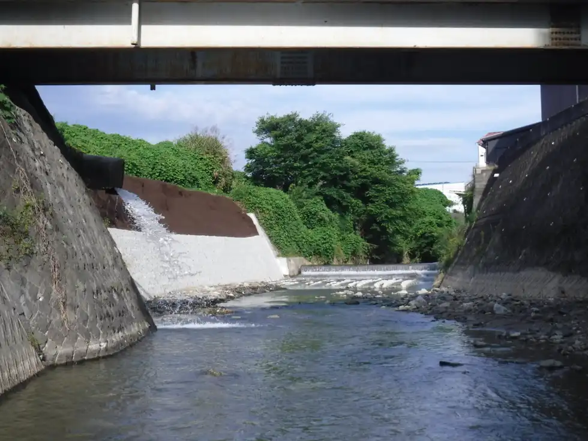
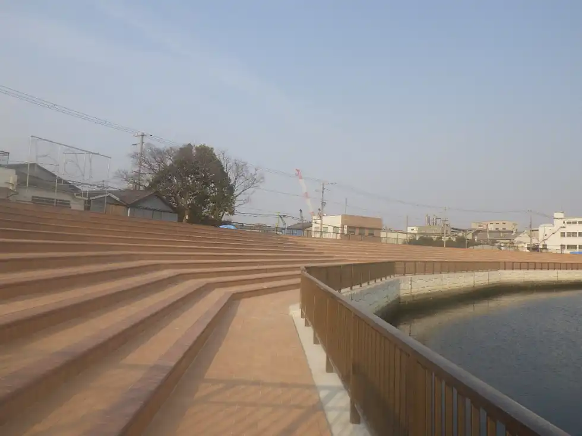
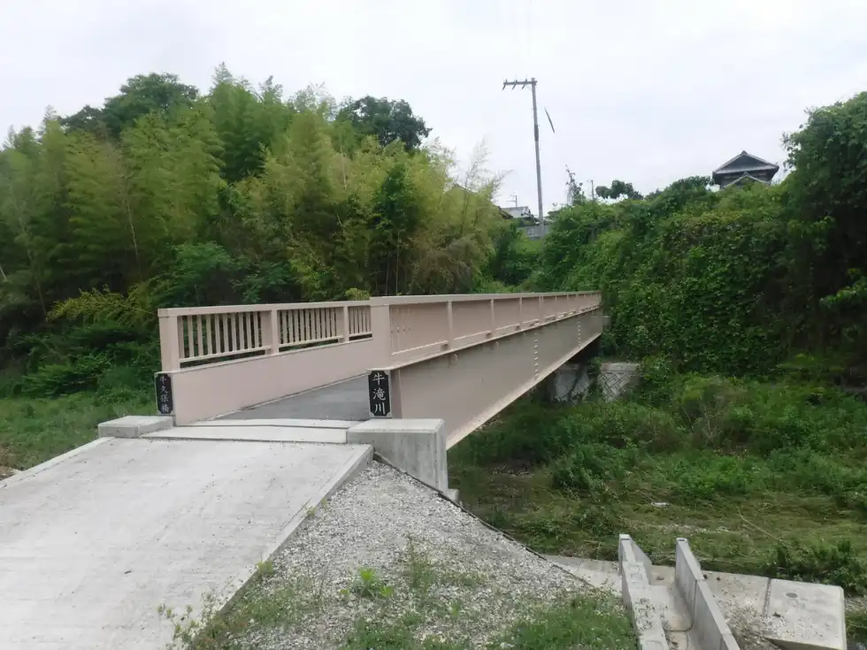

負担とやりがい
現場での施工方法の計画・検討を行い、現場の進捗管理や工程や品質・安全をいかにベターに遂行できるかは、ぞの監督の器量の見せ所であります。大規模な土木工事や人々の一生に残る構造物を作っていくというやりがいがあります。
MESSAGE
採用担当メッセージ
WHAT YOU DO
複数のチームを束ね、
大規模な土木工事を前へ進めます。
現場での施工方法の計画・検討を行い、現場の進捗管理や工程や品質・安全をいかにベターに遂行できるかは、ぞの監督の器量の見せ所であります。大規模な土木工事や人々の一生に残る構造物を作っていくというやりがいがあります。
小さなプロジェクトよりも何個ものチームを統括する立場。大きな責任を果たしつつ、土木構造物を仕上げていくという機会はこの仕事でないと経験できない職種であります。
PROJECTS
MACHINERY

3Dマシンコントロール技術を搭載した高性能油圧ショベルです。燃料効率の良いエンジンと耐久性の高い設計により、効率的かつ正確な作業が可能

日立の33トンクラスの大型油圧ショベルで、高出力のエンジンと最新の油圧システムを搭載
最大垂直掘削深さ：25m 最大垂直掘削半径：8.4m バケット容量：1.3㎥

コマツの30馬力クラスのエンジンを搭載し、優れた機動性と燃費効率を持つ高性能ブルドーザー
地下掘削時、集土機械

日立の90トンクラスの大型油圧ショベルで、最新のISUZU製エンジンを搭載し、高出力（382kW）と優れた燃費効率を誇ります
バケット容量：3.7㎥

コマツ製のアーティキュレートダンプトラックで、環境対応の強力なエンジンと高度なトラクションコントロールシステムにより、悪条件でも優れた性能
最大積載体積：22㎥

コマツ製の高性能ブルドーザーで、環境対応の強力なエンジンとHST（ハイドロスタティックトランスミッション）を搭載
28t級湿地仕様
RECRUIT CONTACT